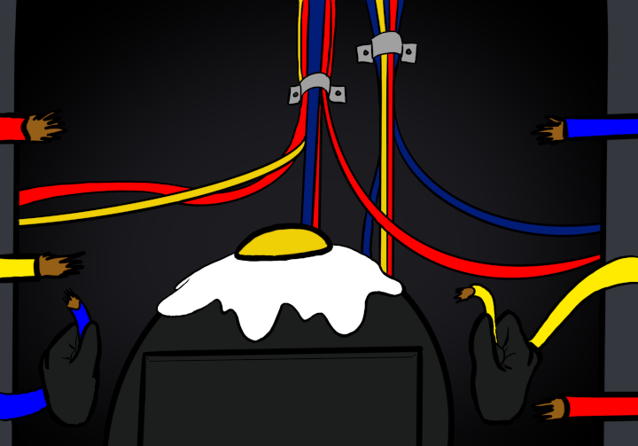

Wiring in the Storage Room
The wire task is fairly simple. Four wires are cut and needs to be reconnected again. Just stick them together, it's that simple! That is what you would like to tell yourself, however for some reason your helmet comes with a flux setting. This makes certain colors look different, causing you to mess up a few times. Great design, isn't it? Eventually, you get all the wires connected, despite it taking longer than you thought. Now that you have finished wiring, you decide to head back to the cafeteria and go into the left hall way.